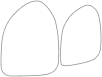

Veneers
A new surface for your tooth
Provides esthetic contour and color corrections, as well as a new surface to a tooth.
What to expect
At the appointment
-
 Duration 60-90 min
Duration 60-90 min -
 Oral
anesthetic use
Oral
anesthetic use -
 Possible minor sensitivity
Possible minor sensitivity -
 Tooth colored temporary or final
Tooth colored temporary or final
After Appoinment
-
Possible post operative sensitivity to temperature changes
-
 Avoid eating until numbness wears off
Avoid eating until numbness wears off
Typically a Veneer is used for
- Altering shape and finish of a smile side of a tooth
- Altering position of a tooth
- Conservation of underlying healthy tooth structure
- Changing the color of the tooth
How it is accomplished
A top layer of enamel is removed in order to make room for the future veneers

Temporary veneers are placed on the prepared teeth. In this step, its important to go over any changes that should be implemented on the final veneer.

Temporary veneers are placed on the prepared teeth. In this step, its important to go over any changes that should be implemented on the final veneer.
Temporary veneers are placed on the prepared teeth. In this step, its important to go over any changes that should be implemented on the final veneer.
Materials
- Zirconia Extremely hard material that does not allow any natural color of the tooth to shine through. Great when trying to drastically change the color of tooth, however can appear opaque and color may lack depth.
- Porcelain Has great depth of color and looks the most natural of all restorative materials, however will translate same of the natural tooth color through the restoration. This material does not mask discolored teeth very well, because of this in office whitening is always recommended before veneering a tooth.